Flower-the-month
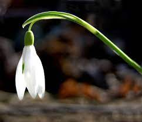
January : Snow drop
The language of flowers : hope.
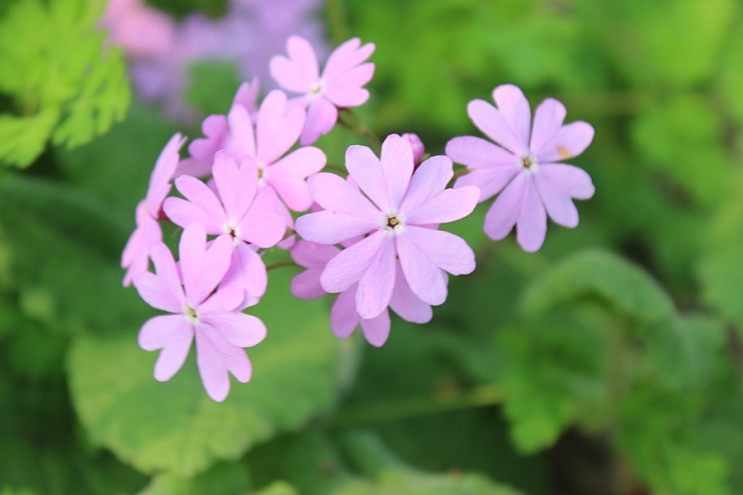
Feburary : Primrose
The language of flowers : My youth and agony.
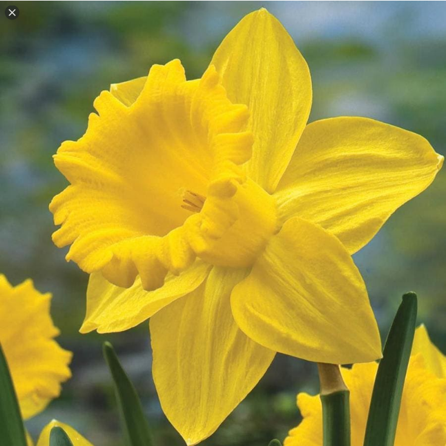
March : Daffodil
The language of flowers : Self-esteem.
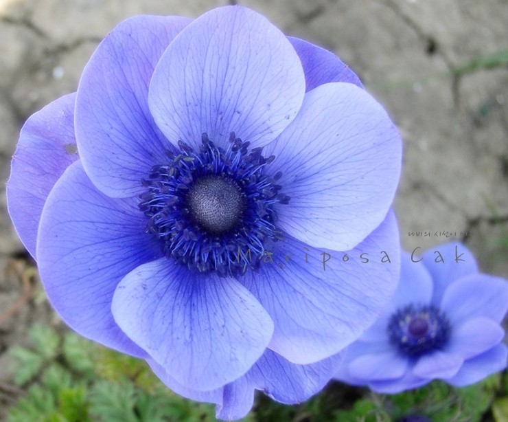
April : Anemone
The language of flowers : expectation.
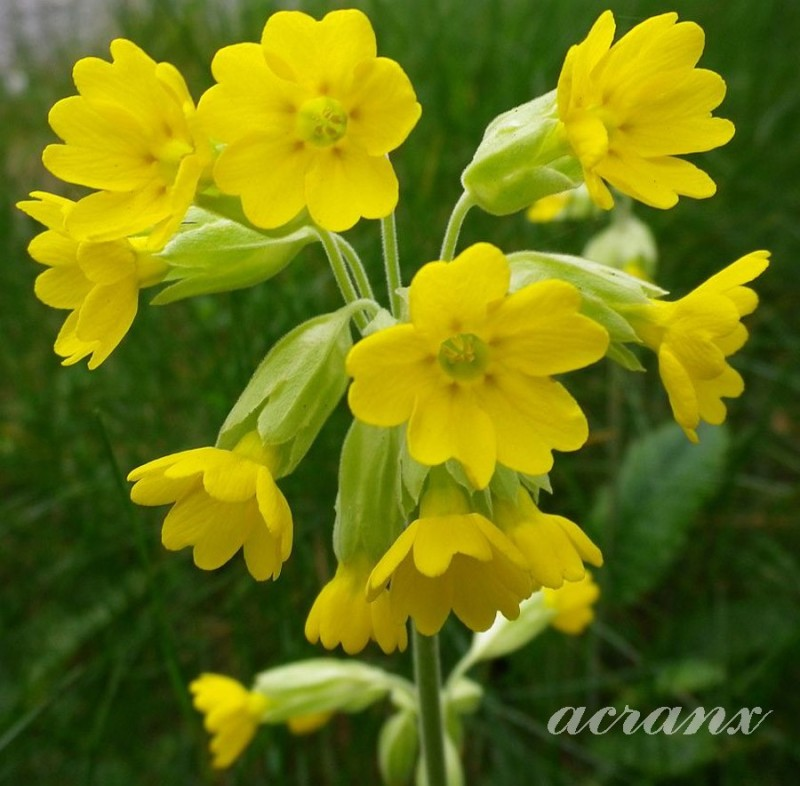
May : Cowsslip
The language of flowers : The sadness of my youth.
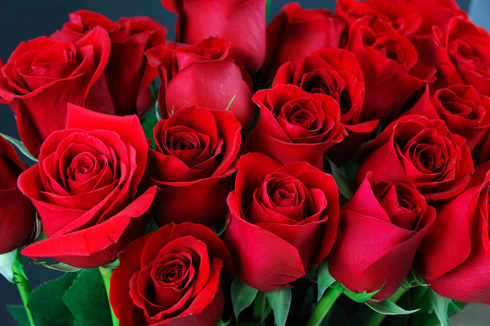
June : Rose
The language of flowers : You're the only one who knows how I feel.
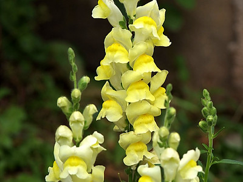
July : Aster altaicus var
The language of flowers : Negligence.
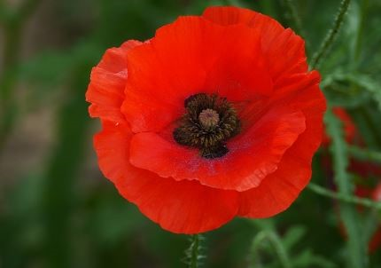
Aguest : Red poppy
The language of flowers :condolence.
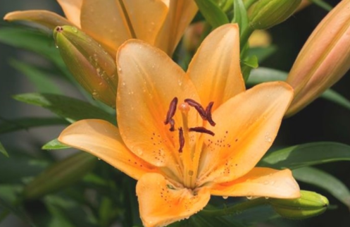
September : Tiger flower
The language of flowers : please love me.
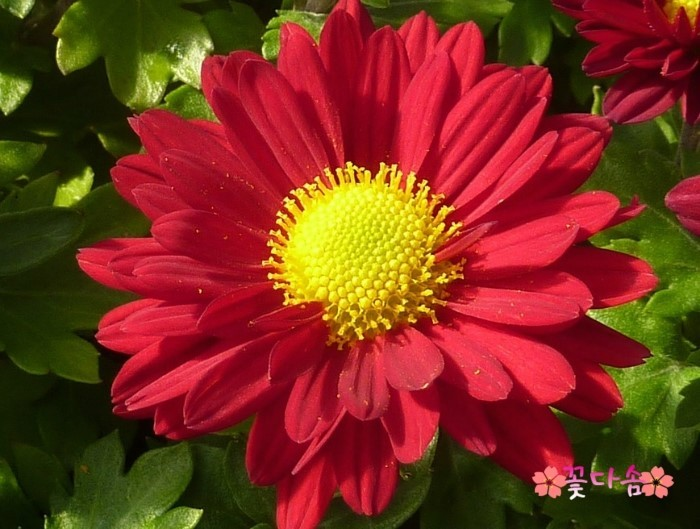
October : Red chrysanthemum
The language of flowers : love.
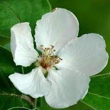
November : Western quince
The language of flowers : One and only love.
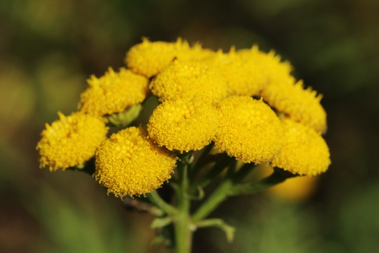
Decmeber : Tansy
The language of flowers : peace.